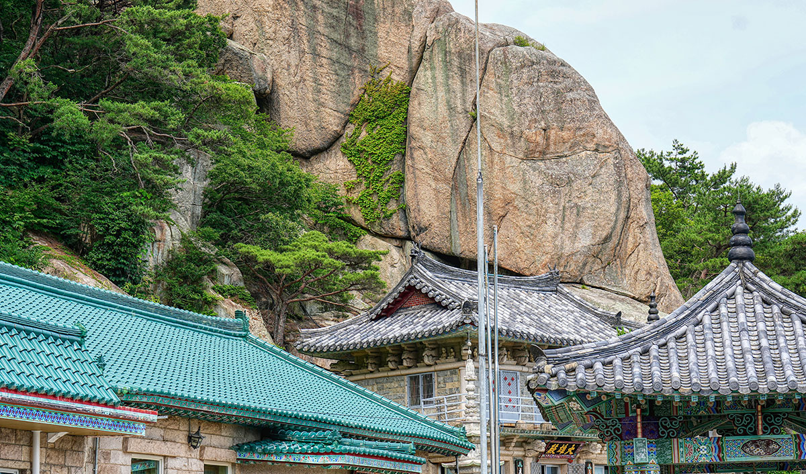

내가 뜨거운 숨을 내뱉는 동안 주방 선반에 있는 카세트에서 봄여름가을겨울의 「브라보, 마이 라이프」가 흘러나왔다. 그건 상만이의 노래방 십팔번 곡이었기에 귀에
익은
노래였다. 골목 상인으로 보이는 아저씨 한 분이 몸을 흐느적거리며 카세트 앞으로 걸음을 옮겼다. 풀어 헤친 셔츠가 얼마나 취했는지를 말해 주고 있었다. 아저씨는 술이 아닌 노래에 취한 것처럼
우렁차게
따라 불렀다. 플랫한 음정과 새어 나오는 발음은 모두 엉망이었다. 하지만 가게 안의 사람들은 두 손을 머리 위로 올려 흔들기도 하고, 정확하지 않은 가사를 따라 부르기도 했다. 모두가 브라보!
브라보!
하고 외칠 땐 마치 화음처럼 들리는 구간도 더러 있었다. 클라이맥스에 다다르자, 나도 할머니의 손을 꽉 잡고 노래를 흥얼거렸다.
「브라보, 마이 라이프」 중에서.
수상작 전문은 《이야기 공작소 부산 : 2호 [2023] 북구 늴리리》에서 확인하실 수 있습니다.
수상소감
作
이채원
우선 값진 결과를 얻게 되어 매우 기쁩니다. 글을 쓴다는 건 늘 고독하고 외로운 일이지만, 우리 주변에서 일어나는 일들을 포착하며 얻는 소소한 기쁨 덕분에 꾸준히 써 내려갈 수 있는 것
같습니다.
누구나 다 겪는 일이지 않느냐며 무심코 지나칠 뻔했던 날을 이렇게 글로 다시 꺼낼 수 있던 것처럼요. 앞으로도 익숙하지만 쉽게 지나쳐서는 안 될 이야기들, 그리고 일상에서도 낯설게 자리하는
풍경들을
꾸준히 포착해 나가며 글을 쓰고자 합니다. 좋은 기회를 주신 주최 측에 감사의 마음을 전합니다.
그리운 병풍과 석불 사이

산사 입구에서 우리는 서로 나는 ‘병풍’, 아내는 ‘석불’로 부르기로 했다. 그 산사의 근원인 ‘병풍암’과 ‘석불사’를 빗댄 것이다. 우리는 그렇게 서투른
선문답과
은유로 우스갯말을 건넸다. 문득 저 멀리서 우리들의 스무 살이 피리를 늴리리 불며 마중 나오는 것 같았다. 젊은 날 우리들의 한때가 거기 켜켜이 칠해져 있었다. 그 옛날에도 우리는 가끔 그 산사에
들렀다. 우리들의 웃자란 달음질을 잠시 내려놓고 불안한 미래에 대한 이야기를 나누고 싶어서였다. 아까부터 우리를 망보던 오지랖 넓은 바람과 산새들도 그제야 경계를 풀었다. 이제는 모르는 바람과
새들이었다.
「그리운 병풍과 석불 사이」 중에서.
수상작 전문은 《이야기 공작소 부산 : 2호 [2023] 북구 늴리리》에서 확인하실 수 있습니다.
수상소감
作
박성근
먼저 부족한 제 글을 뽑아 주신 부산스토리텔링협의회에 깊은 감사를 드립니다. 사실 저는 이번 글을 쓰면서 아내와 지난날을 다시 이야기하기도 했습니다. 그런데 당선까지 되었으니 너무나
행복합니다.
아름다운 추억은 단순히 기억하고 잊어버리는 것이 아닌 것 같습니다. 마치 책갈피에서 오래 잠자던 마른 장미가 다시 훨훨 피어난 느낌입니다. 삶 가운데 오래도록 잊히지 않을 선물을 받은 것 같아
너무
기쁩니다. 이제 저도 어느덧 칠순이 다 되었지만 앞으로도 아내와 젊은 날 그 첫 마음을 갖고 행복하게 살아가겠습니다. 감사합니다.
구포 삼촌
어느 하나 막힘없이 드넓은 정경. 길고 긴 낙동강 위 구포대교, 겹겹이 쌓인 굴암산과 신어산, 저 멀리엔 가덕도까지. 등에 흐른 땀줄기가 열어 놓은 마음과 가슴속
박혀 있던 뻐근함마저 가라앉혀 주는 선선한 바람이 풍경을 경이롭게 만들었습니다. 모든 소음이 차단된 것 같이 고요해진 찰나, 그동안 무심하게 쌓아 올린 시간이 떠올랐습니다. 눈에 다 담을 수 없는
순간에 도리어 무언가 선명해지는 느낌. 시절의 장소는 그런 것 같습니다. 흐린 기억이지만 어딜 봐도 내 것이라 새로워져도 낯설지 않다는 것. 조용히 안아 주는 노을이 다시금 제 마음을 읽어 주는 것
같았습니다. 어느새 손에 힘이 탁 풀리고 눈가가 시큰해졌습니다.
「구포 삼촌」 중에서.
수상작 전문은 《이야기 공작소 부산 : 2호 [2023] 북구 늴리리》에서 확인하실 수 있습니다.
수상소감
作
부순영
세상엔 다양한 이야기가 있지만 부산을 배경으로, 그것도 북구를 소재로 솔직하게 풀어내는 수필이란 생각에 어릴 적 백일장처럼 마냥 설레지 않았나··· 싶습니다. 짧은 분량의 작업이기에 더욱
신중히
풀어냈는데,이제 와 다시 떠올려 보니 또 하나의 신선한 추억이 되었습니다. 통찰의 마음이 없다면 글이란 늘 힘을 가질 수 없는 것인데 깊이 읽어 주신 심사위원분들께 감사의 마음을 전합니다.
:)